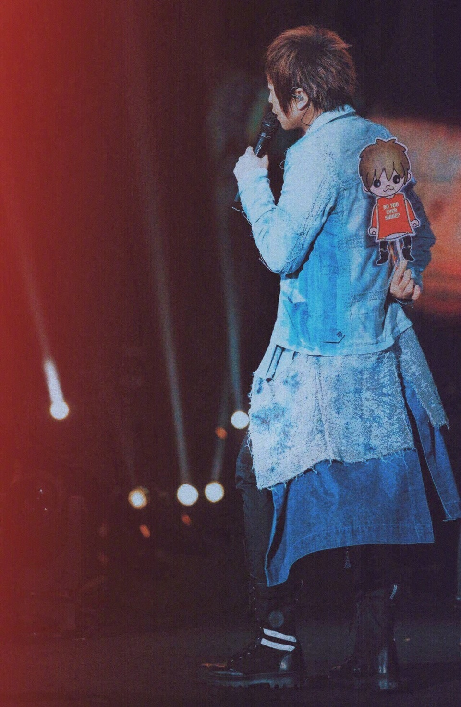

假設，
三條平行時間線裡的你，都來到我面前。
第一個你，
對五月天的歌曲與歷程如數家珍，
過去20年的大小事件，你彷彿都在第一現場，
手足胼胝，不棄不離，一路伴著我們走到這裡。
第二個你，
分不太清楚團員誰是誰，
誰是吉他手? 誰是低音吉他手?
你可能偶然間被突然好想你打動，
或是在K房裡才會離開地球表面，
你偶爾才聽聽五月天的歌，
偶爾讓五月天陪著你。
第三個你，
被身邊損友半哄半騙，誤打誤撞
拿著被小販兜售的螢光棒，來到五月天演唱會，
你赫然發現，你淺意識裡竟然會唱不少五月天的歌，你驚訝於這樣的自己。
-
在生命裡的不同時區與我相遇的三個你，
每個都是百分之百的你，
獨一無二的你，
讓我珍惜的你。
你喜歡揮舞什麼顏色的螢光棒，
你想要在哪首歌曲點亮手機，
你想記住哪一位團員的臉孔與姓名，
你伴我們走過20年，或者只陪我們瘋唱一夜
我都如此真摯的感謝你。
即使三條時間線裡的你對調，
你還是那一個你，沒有責難，沒有悔憾。
-
在五月天的世界裡，
我想要你自由，我想要你快樂，
我想要你偶爾想到的時候，
聽聽我，想想我。
自由的，快樂的，那就是
我喜歡的你。
-
謝謝泉州
謝謝你
-
#一生活一场五月天##五月天人生无限公司#
·
